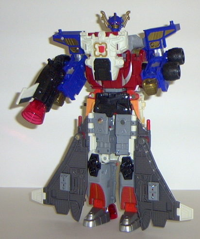

Comettor
Comettor
Allegiance : Minicon
Size : Mini-Con
Difficulty of Transformation : Easy
Color Scheme : Light red, dark flat blue, dark gray, and some silver
Rating : 6.0
Comettor
Allegiance
: Minicon
Size
: Mini-Con
Difficulty of Transformation
: Easy
Color Scheme
: Light red, dark flat
blue, dark gray, and some silver
Rating
: 6.0
Vehicle mode is a moon
buggy. With a gun. Er... yeah. Well, anyway, it looks pretty cool. It's
got the little seat, solar panels, and everything, and there's no real
robot extras in this mode at all. The robot head is slightly visible from
one side (as the solar panel piece only covers it on one side so that it
can slide over it during the transformation), but that's no big deal. And
although there's no such thing as a moon buggy with a gun IRL, this big
honkin' one (comparatively, anyway) looks pretty nice. This toy is in BAD
need of some paint apps, though. The only paint detailing at ALL on this
entire toy is the visor in robot mode. As such, he looks almost like a
prototype... The Minicon symbol is on the front of the vehicle, and the
Minicon port is on the underside, slightly to the front.
It's a bit difficult
to slide the wheels into their respective places during the transformation,
but after that's done, it's easy street. The robot mode head looks really
cool, with an awesome visor and head "antennae". The left arm being the
gun is also a nice idea, but the right arm is just... a solar panel. I
mean, it doesn't really look like ANYTHING. Even a little thing like making
the solar panel halves able to fold in to resemble a claw would have been
nice, but not even that. The wheels-for-feet looks alright, even though
I would have preferred actual feet. There's a large gap in between his
waist and his chest, though, and that bugs me. His articulation is also
somewhat limited because of the wheels-for-feet- his waist and shoulders
can move, but that's it. (And his head doesn't move with the waist, which
I find a bit odd...)
Comettor has a pretty
nice vehicle mode, but his robot mode is a step down. It has its upsides,
for sure, but the solar-panels-for-hands and the gap in the waist I don't
like. And, of course, there's the almost complete lack of paint detailing...
 Jetfire
Jetfire
Allegiance
: Autobot
Size
: Giga-Con
Difficulty of Transformation
: Medium
Color Scheme
: Off-white, dark gray,
black, light gray, light red, and some blue-gray, light orange, dull gold,
mustard yellow, dark flat blue, silver, and transparent dark red
Powerlinx ports
: 5 (3 gimmicked)
Rating
: 9.1
Vehicle mode is a futuristic space shuttle. This mode is one of the coolest modes of all of Armada, and is practically flawless when it comes to looks. The portion that becomes the waist of Jet Convoy (described below) sticks out a bit from the bottom, but other than that, it's visually perfect. The paint apps, the mold detailing, everything- I especially love the huge engines, which show how much thrust this guy needs to escape a planet's gravity. In fact, open up the shuttle bay in the middle, and there's a huge amount of gold-sprayed paint detailing on the inside of the right panel, with computerized pictures of galaxies, planets, and the like! Awesome! The orange spraypaint on the front of the shuttle to symbolize "re-entry burn" damage is also a nice touch. There's also a Powerlinx port on the inside of the shuttle bay, so you can plug a Minicon on there (although it has to be really short and lean in vehicle mode if you want it to stay in there when you close the bay doors). Jetfire's rear shuttle wing activates two of his sound gimmicks- push it towards the front of the shuttle, and a "countdown sequence" sound activates, followed by the sound of a shuttle taking off and some "space" sounds, along with the top engine exhaust port blinking appropriately. Very cool. Push the fin towards the back of the shuttle, and you'll hear a blaster-firing sound, with the blinking engine light as well. Attach a Minicon to the central rear port of Jetfire, and the sound becomes deeper, signifying more power being put into it. Two smaller, "extra" shuttle wings also pop out of the upper sides of the shuttle, which is kinda cool. Attach a Minicon to either of the wing ports and the missile attached the underside of the port drops, like a bomb. These gimmicks are nice in theory, but each has a flaw. The fin is way too sensitive to pressure, and activates the sound gimmicks if you so much as brush it. The missiles also drop too easily even without a Minicon on their respective ports, and this gets pretty annoying. There's also some slight structural problems with this mode- the wings come out of their pegs a bit too easily (although they don't move aroound a whole much there, so it's not that big of a deal), and the shuttle bay comes undone far too easily. You can also attach Comettor to the front underside of the shuttle, thus making him landing gear. You can also attach the robot mode shield to the rear underside of the shuttle, giving it some more landing wheels. (Although one does have to wonder how exactly Jetfire landed before he got Comettor...) Pretty cool, not to mention that Comettor gives Jetfire a front-mounted gun.

Jetfire's robot mode
isn't as nice as his vehicle mode, but it's still pretty cool. His proportions
are the main problem- his lower legs and feet are far too large, and his
body a bit too wide when compared to hsi arms. Also, his face looks almost
like a chicken's- perhaps it would have been cooler-looking if he just
had his visor instead of the eye slits. Still, the wings complement the
mode nicely, and the paint apps and color scheme are exceptional. His articulation
is slightly above average for a larger Armada toy- his head, shoulders
(at three points), elbows, hands, feet, and knees can move. However, he
has no waist or hip articulation to speak of, and his knees can't move
forward, only backward, so it's impossible for him to step forward or anything
like that. His topmost shuttle booster and its attachment becomes his gun
in this mode, which has the same sound gimmicks as it does in vehicle mode.
His fist can't hold it very well, though- the pegs on his arms get in the
way some. The later versions of Jetfire come with scooped-out fists to
provide some extra space for holding the gun, but it doesn't help much,
as those pegs are still in the way. His rear wheel-piece also becomes a
shield that he can mount on his arm- pretty sweet. It should be noted that
there's a slight alteration to his robot mode that some people (including
me) do- the instructions say for his middle shuttle cockpit piece to be
down and level with the other side pieces, but the box artwork- and, indeed,
the toy itself- seems to indicate that the middle piece should be pivoted
upward, as shown above. This also shows a bit of a waist piece that would
not be displayed otherwise, and gives Jetfire an actual chest, which is
why I think this is how Jetfire's robot mode was meant to be displayed.
Jetfire can combine
with the cab portion of
Super Base Armada Prime
to become Jet Convoy. This mode, although better-looking than regular Super
Armada Prime's boxy trailer-pants, really isn't something to show off.
Jetfire's robot fists stick out rather blatantly at the knees, and he STILL
doesn't have any leg articulation. Bleh. From the backside, it also basically
looks like Super Armada Prime has a shuttle shoved up his butt, and that's
certainly not a good thing. I DO like the chest piece, however.
Jetfire has a freakin'
awesome vehicle mode, and a very nice, if a bit misproportioned, robot
mode. I consider his "Jet Convoy" combination a bit of an extra, though,
considering that it was obviously designed around Jetfire, and not visa
versa- and it's kinda cruddy, to boot. Still, a must-buy.
Review by Beastbot